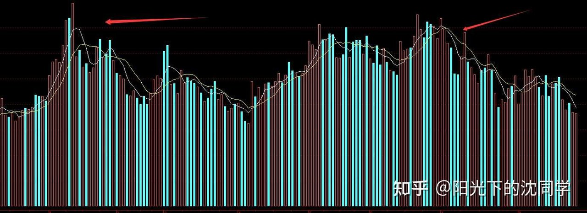
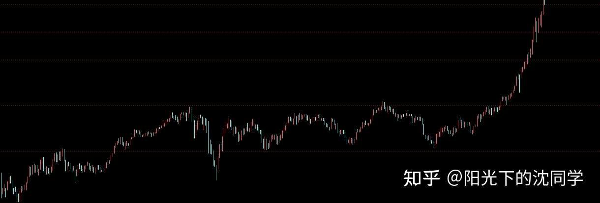
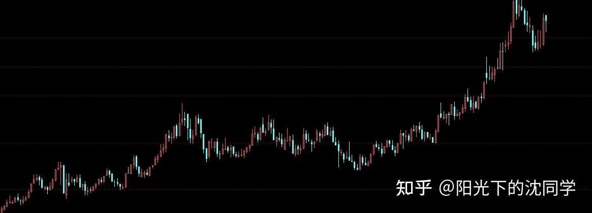
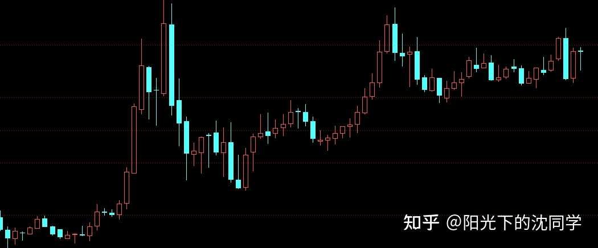
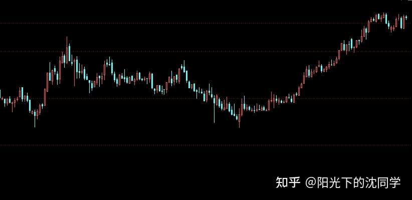
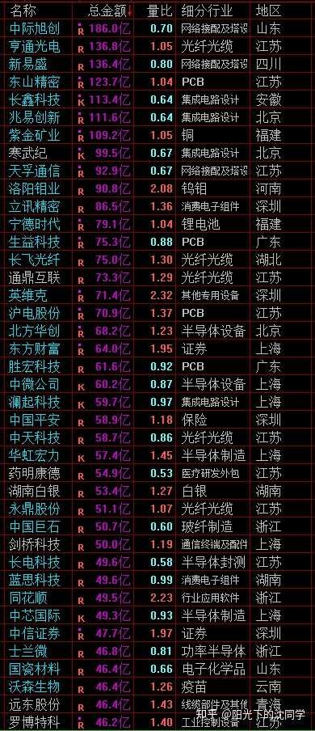
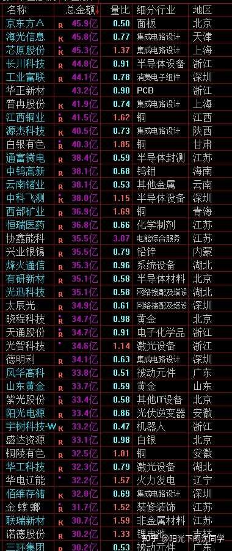
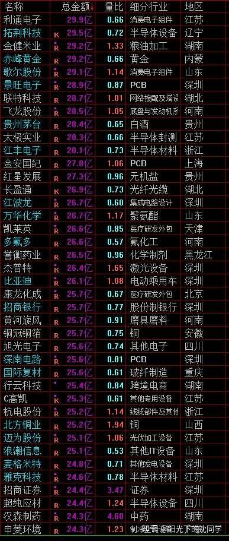

本文核心逻辑在于揭示‘预期差’与‘资金博弈’的本质。作者指出财务报表是滞后指标，股价波动反映的是大资金基于调研、行业高频数据（如原材料、销量）形成的‘预期’。当市场预期已提前消化利空或利好时，财报公布即是‘利好/利空落地’，导致股价出现与业绩表现背离的现象。因此，投资的核心不是死磕财报数字，而是通过资金面（大资金态度）与技术面（筹码分布）去印证基本面，在低位错杀区布局，在高位获利了结，实现周期性套利。
8月的最后几个交易日，中报差不多都要陆陆续续公布出来，也是大资金调仓换股的时间节点，一些权重股走势会波动比较大
股价短期走势和业绩公布的关系主要是预期和位置决定的
我们经常看见财务报表出来以后，看起来不太好，但股价大涨
或者是财务报表很不错，但股价大跌
这个是非常多投资者疑惑的事情
实际上财务报表的公布时间只是大部分散户投资者获得业绩内容的时间
大资金，机构，职业投资者都会对自己想投资，或者重仓的股票一直跟踪调研或者到处打探消息
股价的走势提前几个月，有时候是大半年就已经在消化业绩，或者消息面利空
我们经常看见一些股票突然就走弱，资金面变坏，过了几个月业绩暴雷了，或者是有重大利空公布
这些都是大资金提前得到了消息的经典走势，所以资金面非常重要，资金面代表了大部分资金的态度，尤其是大资金的态度，散户是没办法左右股价的
如果资金面弱了，你一定要有警醒，最起码要做一些仓位优化，不然你拿着拿着大概率要出来不太好的事情
但等你看见了利空，你再吓的卖出，那时候可能反而是阶段性底部，因为消息灵通的大资金提前就在跑路，等消息面明朗，他们反而反手吸筹，把消息滞后的散户洗出来，吸收他们的带血筹码注【本质逻辑】指在恐慌性杀跌中，散户因恐惧而低价抛售的股票。大资金通过打压股价制造恐慌，在低位吸纳这些廉价筹码。【新手提示】当市场极度悲观、利空频出时，往往是主力吸筹的阶段，而非盲目割肉的时刻。
这个就是资金面，大资金预期在提前反应到股价上面
大家平时有时间可以多看看各行各业公布原材料价格，产品价格，销量，出口数据的这些平台
企业获得利润肯定不是莫名其妙无声无息的，他是这个行业，就肯定有对应这个行业的数据，有平台在统计这个行业的情况，每天，每周，每月肯定有新的数据出来
所以财务报表肯定是滞后的，但凡大家愿意去看看，去收集这些信息，你肯定知道这个企业，这个行业在发生什么变化，业绩是可以预估的
即使是你没有什么人脉，你没有调研渠道，你也可以通过以上这些方法，了解到更多信息，只不过没有那么准确罢了，但方向肯定是没问题的
不可能说一个行业销量越来越差，企业库存越来越多，价格一直下降，他业绩还可以大幅提升，这个是不可能的
那么具体多差
能不能跑赢同行
能不能跑赢行业均值，跑赢多少
企业有没有什么具体的应对措施，逆境的抗压能力
这些都是预期，和上面聊的内容一样
大资金通过这些预期提前就已经在给这个企业打分，估值，所以盘面走势，资金面变化里面已经包含了这些
并不是说财务报表公布的那一刻，全天下才知道了这些，而且提前很多资金都知道了一些大概的情况，或者是非常详细的情况，他们就已经在做出选择，比大部分普通投资者做出选择了
自然财务报表公布以后，走势就会和看起来有不一样的地方
有可能财务报表超预期，比调研的内容好，自然就大涨
就算是财务报表下降30%，50%，但实际上股价表现出来的预期是企业要倒闭，是下降80%，相当于提前跌了，提前反应了更加悲观的业绩预期，但实际上没有那么悲观，这种财务报表公布以后会涨回来一部分
同理，财务报表很好看，增长300%，500%，但股价按照业绩1000%来炒作，或者大资金觉得业绩可以增长更多，但实际上没有，当然业绩公布以后反而大跌
这就是预期差注【本质逻辑】股价反映的是市场对未来的定价，而非当下的业绩。当实际业绩与市场预期的偏差（无论是好于预期还是不及预期）出现时，股价会剧烈修正。【新手提示】别看到财报增长就追，要看它是否超过了市场的一致预期，否则极易成为高位接盘侠。，财务报表看的不是死板的数字，而是预期
数字不重要了，因为现在有AI帮你分析，谁后看不懂公布以后的数字，看不懂问一问AI也就懂了
财务报表现在的分析核心是有没有符合大资金的预期，有没有符合企业应该表现出来的预期，这些最重要
比如说行业龙头就应该跑赢同行，跑赢行业水平
如果现在还有非常差，业绩下降一些很正常，不要担心，只要他表现出来的情况是比同行好的，比行业本身好的，企业可以抗压，实际上这个就是好的财务报表，要是有一些亮点会是超预期的财务报表，这种一份看起来好像是业绩下降的财务报表，反而会大涨的
这才是职业投资者看财务报表的角度，不是抓住死板的数字增长，下降多少，这个没有那么重要，因为提前都已经市场上很多资金知道了
关键是你要有一个预期，你要懂这个行业，这个企业的估值逻辑
通过行业整体情况，企业发展情况，来看目前股价是不是符合预期，有没有错杀注【本质逻辑】指优质资产因市场情绪、板块轮动或短期利空被非理性抛售，导致股价低于其内在价值。【新手提示】这是价值投资的黄金坑，前提是你必须对企业的核心竞争力有扎实调研，确认其基本面未坏。，有没有贵，这个非常非常重要，也是价值投资，基本面分析的根基
实际上比资金面，技术面分析难的多的多，确实需要很扎实的基本功和长期的调研能力，这方面圈子和渠道的累计
资金面，技术面，消息面这些盈利模式有天赋，基本面投资没有天赋一说，都是扎实的基本功和经验，人脉的门槛和壁垒
你没有长期的跟踪调研，没有这方面的研究，你确实没办法给一个企业比较好的估值，你没有这方面的这些资源和经验，你在基本面方面的估值就是缺失的
很多职业投资者在这方面是弱项，他们也会通过深耕资金面，技术面和交易经验来弥补基本面分析的不足
也是非常好的思路，比如说资金面如果有问题，技术走势不对劲，他们就认为基本面有问题，大资金提前在做预期，他们就先撤退，这样会非常保险，而且胜率越来越高
因为这个时代越来越透明，各种数据，信息比过去容易调研无数倍
所以盘面确实大部分时候已经体现出来了很多大资金的态度和他们调研到的内容，你如果可以把资金面学通，并且可以看懂技术面的表达，相当于你可以明白大资金在做什么，也可以推理出来很多基本面的信息
这个是很高阶的投资思维和各种分析思路的互相印证，是估值，交易很重要的点
今天专门开篇用大篇幅聊这些，就是因为马上中报公布完了，很多投资者咨询这方面的问题，就做一个集中深度解答
让大家对财务报表和股价走势，包括大资金思维，估值方法等等有一个系统性的认知
这些内容非常非常重要，大家一定要先收藏，先复制下来，后面慢慢研究，我没有时间总是这样长篇大论那么细腻的抓住一个点去聊这么多，大家一定珍惜珍惜分享
大家把上面这些内容真的看懂了，就会更加明白平时股价走势，资金面，技术面，基本面的变化有哪些联动
估值应该怎么去做，学习和实战也会有一个比较明确的方向
不同的行业，企业都是不太一样的，所以价值投资是非常非常难的
不下大功夫很难把握，很难去估值的比较好

图中红柱代表成交量，箭头指向的高位放量区往往是主力出货的信号。高位缩量上涨或放量滞涨，暗示多头力量衰竭，主力正在悄悄撤退，新手应警惕此类图形。
每天原创不易，读者朋友千万不要忘记点赞支持一下
正所谓先赞后看，腰缠万贯
大家可以先点一波赞，我们再继续慢慢聊
祝点赞的朋友福寿无量，天天开心
上面聊到了股价和基本面的预期差，然后就是位置
位置很好理解，低位，错杀过头也会，实际上风险就在释放，短期就算业绩没有那么好，只要足够便宜，一样会导致大家对其业绩不会那么苛刻
尤其是一些股票因为被大资金放弃了很久，里面的机构都跑光了
经常是行业，基本面已经复苏了一段时间，市场还是没有基于合理估值
这种其实就是大资金之前跑了一直还没有回来，股价位置足够低，有了未来的炒作空间
股价已经充分反应了悲观，已经非常错杀，周期已经到了黎明破晓之时
一旦后面大资金回来，机构回来，股价就有巨大爆发力
对于这种周期走到这个位置，且估值非常低，错杀非常严重的好公司是非常值得慢慢配置的
这也是为什么，我自己会在下跌趋势里面比较总是低位好公司，新兴行业，或者是低位红利，白马蓝筹，高端制造，出海龙头的这些提前布局
其实就是他们预期已经到了低点，市场上给了非常低的预期，他们也基本上周期到低位，以后上涨空间反而很大，这种就是低位，便宜带来的未来超预期上涨空间机会
企业，行业没有问题，最终都是周期，都会有恢复，股价自然就有机会
那些位置高的，对业绩预期更加敏感，因为已经有大量获利盘，已经比较贵，预期是是很高的，财务报表一点点不达标都大跌，都会引起怀疑，这种反而难做
尤其是大资金已经把股价炒作起来以后，其实不管什么理由，周期走到了这里，最终目的是收获，是要获利了结，出货的，所以业绩但凡有一点点不太好都会想提前获利了结，除非是真的非常超预期，就继续顺势而为再拉升拉升
把以上这些情况搞清楚了以后，就会明白，高位为什么难做，只要到了高位本质上大资金，资金面就是随时想获利了结的，资金面开始越来越不友好，基本面很难总是一直超预期
低位真的可以化解很多问题，错杀是最大的利好，容错率高的多
而且本质上各种资产也是资金的容器，就是要低位才能有上涨炒作的空间，一切的一切是把便宜的东西收集筹码，高位再出掉，这个是最最本质的周期
如果你坚持大仓位去配置低位优质的资产，熬得住，肯定是胜率很高的
总是追涨杀跌，对高位品种去博弈，胜率是低的，就算是基本面很好的一样胜率不高
这些内容大家可以先慢慢消化，把思路理清楚，未来长期投资会越来越顺的
目前行情成交量越来越差，不宜追高加仓，继续控制好总仓位，多留现金，等后面杀跌再慢慢配置低位优质资产，千万要有耐心，这个位置别满仓出击，千万不要借钱投资，会非常危险
长线底仓也可以根据最新的一些情况，持仓的财务报表情况做一些优化，确保自己长期持仓是健康，低位的
最适合新手投资者，上班族，股龄10年内投资者的投资策略分享
美股没有买点，继续持有底仓
黄金持仓不动，维持长期抗通胀策略
债券目前值得配置，闲钱长期理财收益不错，目前估值不高，尤其是10年内债券选择空间很大
红利在熊市更加稳健，可以拿住底仓，后面有下跌可以慢慢加仓
以上这些长期优质资产不是不会跌，是长期走势比较稳健，每次大跌可以涨回来，可以新高，并不是那种炒作一波以后可能就退市了，或者一蹶不振
我自己是很喜欢拿住长期优质筹码和股息复投的
港股A股都有很多长期优质的企业值得长期坚守
比如说港股核心红利企业，虽然没有科技那么强，但这些年我持有下来体验一样很不错
就像下面这些企业一样，短期是慢慢吞吞的，但月线一直很稳健
在港股这种流动性比较弱的市场里面，优质高股息企业长期依旧是很好选择，港股对于选股的要求比A股大，更难做，但核心企业是长期有价值的




A股的现金流稳健，长期回购，股息比较好的龙头实际上长期也都不错，股息复投下来都有很好的收益
其实就是熬时间，需要耐心，你有这个耐心，在把红利资产做好，分散配置，长期股息复投，你可以轻轻松松复利
这个就相当于是你的养老金，让自己提前退休
再叠加美股，黄金，债券综合配置，小仓位还可以玩一玩短线博弈，整体账户收益会比较稳健，心态自然会更好
如果大部分仓位去追涨杀跌，就很容易突然亏一笔大钱，导致几年赚不回来，这种就很麻烦，也会对投资失去信心和耐心
投资是一辈子的事情，是细水长流，慢慢做大本金的游戏
是一个一开始感觉复利钱不多，但稳健复利下去发现钱越来越多，感受到复利魅力的游戏
保护好本金是第一要义，在这个基础上再考虑怎么获得超额收益
本金都保不住，那整个游戏都会很快结束
能在股市混的久，复利时间足够长，才能赚的越来越多
其实时间过的非常快，有时候看盘面变化，会很急为什么买的股票一直不涨，但真的不知不觉好几年可能就过去了
体验过这种感觉以后，发现每年股息复投，拿住优质资产也没有那么难，时间其实挺快了，一年又到了，股息又到了，没有想象的那么慢
就是这样不知不觉，时间就流逝了，很多当初觉得慢的资产也都悄悄继续新高，你的股息也越来越多，回过头来看是有点煎熬，习惯了这个节奏也会，会觉得这样赚钱其实挺快
当然也可能是我年纪大了吧，所以对时间的感知力大不如前了，容易感觉到时间更快
年轻的时候也确实更加心浮气躁一点，投资可能更加适合心态，心境都更加平和的人，你可以慢的下来，反而更容易赚钱的

该表展示了不同指数的估值水位。通过量化泡沫、高估、合理、低估区间，为投资者提供了明确的‘安全边际’参考。新手应在‘低估’区间分批布局，在‘泡沫’区间果断减仓。
大家有任何投资疑问，有什么想交流的都可以付费咨询，想单纯支持一下也可以
【在知乎上我的主页咨询即可，没有任何群，不搞私下小圈子】
家庭资产长期稳健配置方案分享，仓位优化，估值分析，行业分析，心态调整，各种投资学习技巧都可以咨询
大家的支持和尊重是我创作的最大动力
感恩大家每天的付费咨询和打赏，感谢大家对知识的尊重，感谢大家对我的支持
欢迎提问
适合职业投资者，10年以上经验老股民，基本功极其扎实投资者的实战分享
继续聊实战
成交量不怎么样的行情下是不容易做的，只能把握杀跌机会去买低位优质品种
这两天行情开始小幅企稳反弹，力度一般般，暂时停止加仓，等后面继续大跌再加
3950-3650区间会反复震荡一段时间
之前高点是3994附近，非常接近4000点
资金面也聊过很多次，4000点以上是压力很大的，套牢盘很大，尤其是4150以上
现在继续走下跌趋势，那么下一轮反弹高点大概率会更低，很难突破3994，3950附近应该就比较极限，因为3950-3650区间基本上就是目前整体市场综合筹码平均的区间
成交量不大，没有什么利好主线的情况下，很难突破这个区间
未来随着成交量继续下降，市场资金面还会更弱
下一次反弹结束以后，继续杀跌，再反弹起来，高点还会下降，就是这样一步一步的走弱
做短线博弈，做波段就是把握每次杀跌去慢慢加仓，只做低位优质方向，或者是细分领域业绩超预期方向，其他都不做
长线底仓可以加错杀的港股，港股在12月之前都可能波动比较大，肯定有不少错杀机会等着，可以多关注
白马蓝筹，红利也会有一些因为财务报表短期一般般，或者行情情况跌下来的，这些也有机会加
我自己也是围绕以上去做加仓，比较看好出海龙头，现金流稳健，高端制造，红利这些方向的长期机会
板块的话金融，消费，生物医药，锂电设备，核心零部件企业，AI产业链，航天航空，军工，包括其他各种新兴行业里面低位科技都是不错的
到时候有时间可以把一些不错的板块拿出来分析
跌了有机会慢慢加，不跌就多观望，上涨比较到位，反弹超预期就做一些减仓，做好仓位控制为主
总仓位应该低于60%，这样才能应对未来全球股灾，下跌趋势行情，才能有余力不断加仓
我自己目前总仓位50%以内，整体优化仓位比较彻底，高度重视未来全球股市风险，暂时不敢大幅上仓位
现金流依旧是我认为目前最重要的配置，需要有一波大跌来化解泡沫才能安安心心的加仓，把仓位推到60%以上，70%-80%这样的高位区间，现在肯定不是时候，现在应该多留现金，优化好持仓，按照比较高风险的态度来做仓位优化工作

此表列举了多只个股的量比数据。量比大于1说明成交活跃，若股价在低位且量比放大，可能是主力资金进场信号；若在高位量比异常放大，则需警惕主力对倒出货。


---风险提示：股市有风险，入市须谨慎
今天是坚持写复盘笔记的第1509天【每日打卡】
下面是我自己多年来的一些重要的心得感悟，分享给大家，会不定期增加内容
1，
长期投资成功的关键是稳定的情绪和沉稳的性格，这些比过人的天赋更重要
2，
最终我们穷其一生获得的一切经验、知识和所有财富都需要转化为自身的品德修养，不然获得越多失去越多
自身的修养是留住各种财富最好的容器，富裕一时不难，富裕一生不易
珍惜获得的一切，保持初心、慈善、知足，让自己的德行和财富共同成长，才能方得始终
3，
古之成大事者，不惟有超世之才，亦必有坚忍不拔之志
想成为优秀的投资者一定要持之以恒，不断学习，反思，总结，在投资中获得的各种经验最终都会成为你财务自由的砖瓦
4，
再高的智商也一样会被情绪一瞬间冲垮
大部分的亏损都来源于投资者的冲动和情绪化交易，学会控制自己的情绪和心态才能长期稳定的复利
5，
富在术数，不在劳身
一定要多思考，任何时候想清楚了再交易，漫无目的的交易，只会多做多错
6，
利在势居，不在力耕
投资赚钱主要靠把握时机，没有机会就休息，多留现金
做可以让自己心安的投资，便是对于你来说最好的盈利模式
7，
谨记：贪念起，万念俱灰！
控制住了风险，利润会随之而来
富贵险中求，也在险中丢
求时十之一，丢时十之九
仓位情况【不推荐模仿】
短线博弈仓位：13%
长线+短线总仓位尽可能低于60%，这样更符合当前行情的风险程度
长线资产配置目前个人分散持有：各种债券ETF+各种核心红利ETF+美股ETF+黄金+优质REITS+长期看好的优质企业+核心ETF
美，港，A股长线+短线所有股票持仓投资方向配置比例参考：
金融：【保险，银行，券商】15%
消费：【新消费+龙头品牌消费+游戏】：28%
生物医药：12%
AI产业链：10%
能源，动力【储能，电力设备，电力方向】：6%
高端制造【半导体，机器人，航天航空，军工，出海龙头】：25%
周期【化工化纤，新材料，核心矿产】：4%：
【每3-6个月更新一次】
最新更新时间2026年6月
全文总结：投资是一场与大资金的博弈，而非简单的数字游戏。核心法则：1. 财报是滞后的，要看行业高频数据预判趋势；2. 资金面与技术面是基本面的‘晴雨表’，当资金面走弱、技术走坏，必须先撤退；3. 坚持在低位错杀区配置优质资产，熬过周期；4. 严控仓位，现金流是应对全球股灾的唯一护身符。避坑指南：拒绝追涨杀跌，拒绝满仓博弈，拒绝在利好公布时盲目跟进，保护本金永远是第一要义。

{kind=link}
{kind=link}
今天内容非常干货，关于业绩和股价，估值方面的内容分享的很深度，解答了我很多疑惑，谢谢
收藏起来以后多看几遍，一下子真的没办法完全吃透
希望老沈以后多写点这种深度分享，可能是很难看懂，但真的很有价值，我愿意慢慢学
维持85%持仓不动，尽可能按住手不满仓
前几天刚从江西樟树回来，跑了几家合作药企，车间都忙冒烟了，订单排到下半年，销售部天天加班发货
所以医药我非常看好，在这个能力圈里面确实很舒服，跳出来自己的能力圈就很难赚钱，没有了各种信息渠道也没有了长期投资的信心
老沈之前说医药值得长期配置我深以为然，包括咨询过老沈这方面调研情况，对过答案，就更加有信心
优质的医药股一定是机会很大的，大家也可以关注关注，从长期眼光去看，未来国内一定会诞生好几家全球顶级的医药龙头，现在其实他们都还在底部阶段，就看大家能不能拿得住了
一起加油
继续笔记：
1、 最近没啥成交量，各个公司也在陆续公布半年报，一些权重股走势会波动比较大，需要多注意。
2、 美股没有买点，继续持有底仓
3、 黄金持仓不动，
4、 债券目前值得闲钱配置
5、 红利在熊市更加稳健，可以拿住底仓，后面有下跌可以慢慢加仓
在高位又没啥成交量，宜苟。
继续场外定投，场内等合适的杀跌机会。
8/27 老沈复盘概括（复盘 8/26 周三）
市场判断： 中报公布尾声，是大资金调仓换股时间节点，权重股波动会比较大。成交量差的行情不容易做，只能把握杀跌机会买低位优质品种；这两天行情小幅企稳反弹、力度一般，下一轮反弹高点大概率会更低，很难突破 3994，3950 附近就是极限（4000 以上套牢盘极大，4150 以上更甚）；反弹高点一波低于一波，逐步走弱。3950-3650 区间反复震荡。
核心观点： 今天长篇重点讲财务报表与股价的预期差—— 财报公布时间只是散户知道的时间，大资金提前几个月已在消化业绩；看报表不看死板数字（AI 时代谁都能看懂数字），而是看是否符合大资金预期、是否跑赢同行 / 行业。核心是 "位置"：低位 + 错杀是最大利好，容错率高，周期到黎明期、大资金回来就有巨大爆发力；高位品种对业绩极敏感，一点点不达标就大跌（大资金本质随时想获利了结）。他自己在下跌趋势里坚持布局低位好公司、新兴行业、低位红利 / 白马蓝筹 / 高端制造 / 出海龙头，就是提前埋伏 "预期到低点" 的方向。
今日操作（方向延续）： 短线仓位 13%→13%（持平），总仓位 50% 以内（上限 60%）。这两天小幅反弹暂时停止加仓，等后面继续大跌再加；只做低位优质方向 + 细分业绩超预期方向。长线可加错杀港股（12 月成分调整前波动大、错杀机会多）；看好出海龙头、现金流稳健、高端制造、红利长期机会。板块：金融、消费、生物医药、锂电设备、核心零部件、AI 产业链、航天航空、军工、新兴行业低位科技。
其他资产： 美股没有买点，继续持有底仓；黄金持仓不动、维持长期抗通胀；债券目前值得配置，闲钱长期理财收益不错，估值不高，10 年内债券选择空间很大；红利熊市更稳健，拿住底仓，后面有下跌慢慢加仓 —— 港股 A 股都有很多长期优质高股息企业值得坚守（股息复投 = 养老金）。
一句话： 中报季别被报表数字迷惑，要看预期差和位置 —— 低位错杀是最大利好；反弹高点一波低于一波，现金为王，等大跌再慢慢加，仓位留在 60% 以内等真正的低点。
今天干货老沈，能不能推荐几本关于资金面和技术面的书籍，大家学习学习[感谢]
看了很多基本面、技术面、消息面的东西，最后结论是中长期持有低位的好公司就是硬道理。财报好但是没匹配股价增速是可以不涨的，财报差但是位置够低是可以底部震荡甚至开涨的，只要业绩不是长期持续下滑就行，好公司就弥补了这个风险，他们一般有底部的。技术走势复杂多样，但是一样的走法和成交量高位往往是出货，低位往往是洗盘，该买的人都买了就只能跌了，该卖的人都卖了就只能涨了。高位利好拿来出货或者利好兑现，低位利空只是洗盘或者利空出尽。所以低位好公司就是胜率高，唯二要担心的就是好公司从长期维度是否有可能变成坏公司，还有就是能不能拿的住，资金可能不一定马上选择，你能不能接受这个时间差。分析和实战是两码事。感觉我现在分析也可以扯点东西，实战依旧狗屁不通[捂脸]还是需要长期修炼[doge]
感谢分享